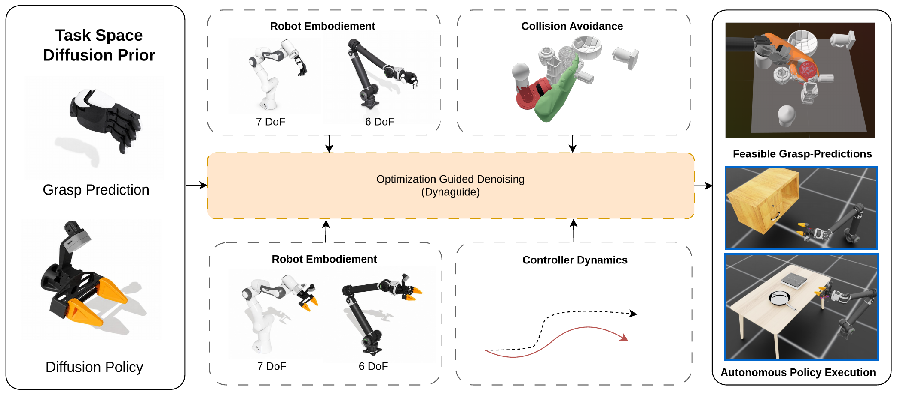
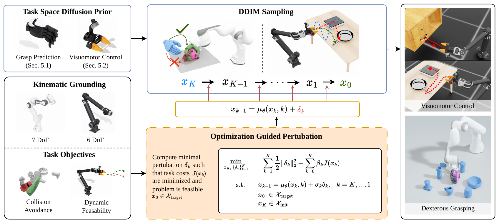
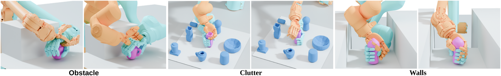
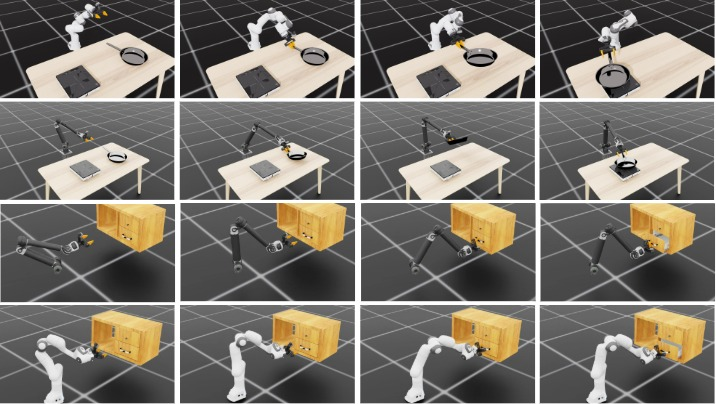
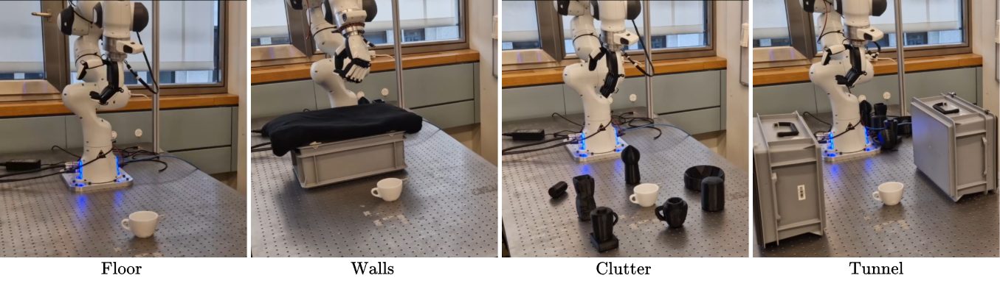
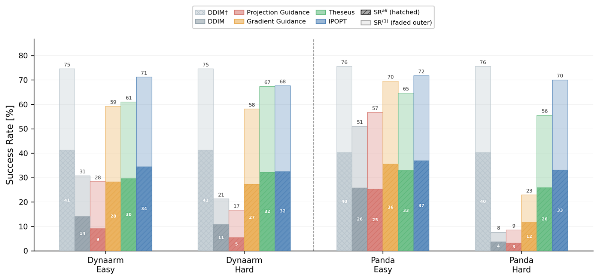

ETH Zurich · EPFL
*Equal contribution · †Equal supervision

Abstract
Diffusion models sample effectively from high-dimensional, multimodal distributions, but their outputs may violate deployment constraints. For task-space robot policies, generated grasps, waypoints, or trajectories can be distributionally valid yet infeasible — violating reachability, collision-avoidance, or closed-loop executability requirements. This embodiment gap limits zero-shot deployment across robots, even when the task-space behavior itself is transferable.
We propose an inference-time optimization framework that couples behavior generation to physical feasibility by formulating diffusion guidance as a constrained optimization problem. Our key insight is to replace the sampling perturbation in the backward process with an optimized correction, allowing hard constraints or soft penalties to be imposed during sampling — without retraining the diffusion model, while keeping samples close to the learned prior. Across settings and embodiments, optimization-guided denoising matches the feasibility of projection- and gradient-guidance baselines while better preserving grasp quality, improving controller-level executability and task success by up to 20 pp on dexterous grasping and 23 pp on visuomotor manipulation over the best baseline.
Zero-shot hardware deployment on a Franka + XHand. Left: gradient-guidance baseline. Right: our optimization guidance.
In cluttered scenes our corrections preserve a stable grasp while respecting environment collisions; the baseline often drifts off the object.
Supplementary Video
Method walkthrough, simulated grasping and visuomotor manipulation across both arms, and real-world rollouts.
Method
A DDIM reverse step splits into a deterministic model prediction μθ(xk,k) plus a stochastic perturbation σkω. We keep the prediction, but replace the random ω with an optimization variable δk that enforces feasibility — so each step stays close to the pretrained sampling trajectory.

An inference-time framework that swaps the DDIM sampling perturbation for a constrained optimization variable, applying small, structured corrections to a frozen diffusion prior — admitting a clean MAP interpretation.
One formulation, solved either as a constrained nonlinear program (IPOPT) or a differentiable least-squares relaxation (Theseus / L-BFGS). Instantiated for reachability, collision avoidance, and controller-level executability.
The same task-space prior transfers zero-shot across simulated manipulator arms and environments by changing only the inference-time optimization problem — improving grasp quality, task success, and executability.
Applications
We instantiate the feasibility cost J for dexterous grasp synthesis (reachability + collision) and for image-conditioned dynamic manipulation (controller-level trackability).


Real-World Deployment
The dexterous policy is deployed on a physical Franka Panda + XHand with no retraining or fine-tuning. Each clip compares the gradient-guidance baseline (left) against our optimization guidance (right); our corrections preserve grasp structure while accounting for environment collisions.
Even on the simplest scene, the baseline can satisfy collision while drifting off useful grasp modes; ours keeps the grasp.
Tight side walls shrink the reachable, collision-free set; the optimized correction stays inside it.
Dense neighbors demand precise approach poses while still securing the target object.
The hardest environment: the hand must reach through a constrained opening to grasp.

Results
Dexterous grasping: 1,200 grasps over 30 objects × 8 grasps × 5 base poses, a single shared diffusion checkpoint deployed on both arms with only JIK swapped.
| Arm | Method | SR(1) [%] ↑ | SRIK [%] ↑ | Efc (×103) ↓ | Q1 (×10−3) ↑ |
|---|---|---|---|---|---|
| — | DDIM† floating, upper bound | 75.0 | N/A | 0.01 | 16.0 |
| Dynaarm | DDIM (cuRobo snap) | 27.0 | 54.6 | 2.37 | 6.5 |
| Projection Guidance | 23.7 | 99.9 | 0.72 | 6.8 | |
| Gradient Guidance | 58.8 | 99.3 | 0.97 | 12.8 | |
| Ours (Theseus) | 63.5 | 95.8 | 0.26 | 14.5 | |
| Ours (IPOPT) | 69.8 | 96.4 | 0.20 | 15.2 | |
| Franka | DDIM (cuRobo snap) | 33.7 | 83.7 | 2.02 | 7.1 |
| Projection Guidance | 37.4 | 100.0 | 1.19 | 8.1 | |
| Gradient Guidance | 50.9 | 97.9 | 1.04 | 11.1 | |
| Ours (Theseus) | 61.0 | 98.3 | 0.23 | 14.1 | |
| Ours (IPOPT) | 71.0 | 99.8 | 0.06 | 15.7 |
Bold = best, underline = second best. SR(1): per-(object,pose) success; SRIK: fraction kinematically reachable; Efc: force-closure violation; Q1: grasp wrench quality. Our methods recover grasp quality near the floating-gripper upper bound while keeping feasibility above 95%. (IPOPT trades ~46–69× runtime over DDIM for hard constraint satisfaction.)
Image-conditioned manipulation: a single floating-gripper prior grounded to each arm through the controller-level cost Jdyn, evaluated on 100 environments (mean ± std over 4 runs).
| Task | Method | Dynaarm SRtask ↑ | Dynaarm SRsub ↑ | Franka SRtask ↑ | Franka SRsub ↑ |
|---|---|---|---|---|---|
| Drawer | DDIM† upper bound | 99.5 ±1.0 | 100.0 ±0.0 | 99.5 ±1.0 | 100.0 ±0.0 |
| DDIM | 79.5 ±1.9 | 84.0 ±0.8 | 57.8 ±2.2 | 66.3 ±3.1 | |
| Gradient Guidance (σ) | 79.8 ±1.7 | 85.0 ±1.6 | 57.8 ±7.8 | 66.8 ±6.8 | |
| Gradient Guidance (xt-nudge) | 79.8 ±3.3 | 83.8 ±3.0 | 58.0 ±2.4 | 67.0 ±2.8 | |
| Ours (L-BFGS) | 81.8 ±2.9 | 87.3 ±2.9 | 60.0 ±3.4 | 70.0 ±1.6 | |
| Pick & Place | DDIM† upper bound | 62.5 ±6.2 | 95.3 ±2.1 | 62.5 ±6.2 | 95.3 ±2.1 |
| DDIM | 26.0 ±2.0 | 63.3 ±3.3 | 44.0 ±4.5 | 89.0 ±3.4 | |
| Gradient Guidance (σ) | 29.3 ±4.3 | 69.3 ±4.6 | 41.0 ±1.4 | 92.3 ±1.3 | |
| Gradient Guidance (xt-nudge) | 26.3 ±3.4 | 63.3 ±5.0 | 43.3 ±1.7 | 90.3 ±3.8 | |
| Ours (L-BFGS) | 41.8 ±3.8 | 66.0 ±3.6 | 67.0 ±3.4 | 98.3 ±1.3 |
Bold = best among embodiment-aware methods, underline = second best. On the harder Pick-and-Place task our method clearly outperforms unguided DDIM and both gradient-guidance baselines on both embodiments — +15.8 pp (Dynaarm) and +23.0 pp (Franka) task success — while subtask success on the Franka approaches the unembodied upper bound at 98.3%.

Citation
@article{bodmer2026grounding,
title = {Grounding Generative Policies in Physics:
Optimization-Guided Diffusion for Robot Control},
author = {Bodmer, Sabrina and Zurbr{\"u}gg, Ren{\'e} and Portela, Tifanny
and Ma, Hao and Didier, Alexandre and Hutter, Marco
and Jones, Colin and Zeilinger, Melanie},
journal = {arXiv preprint},
year = {2026}
}